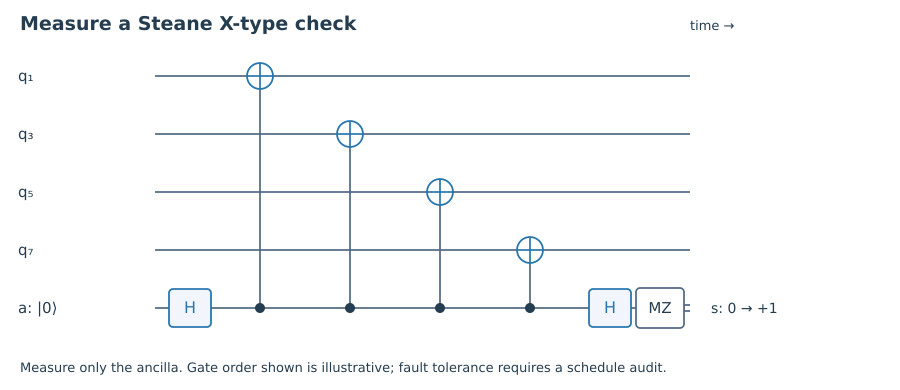

1. Quick check §
What is the classical syndrome of an error e on a codeword?
Hint 1
Use Hv=0.
Worked solution
It is H(v+e)=He, independent of the transmitted codeword.
Chapter 04 · Draft lesson
How can classical parity checks protect both quantum amplitudes and phases?
Starting point: Chapters 1–3; binary strings and stabilizer commutation.
Anchor example: The seven-qubit Steane code built from a binary Hamming parity-check matrix.
Method: Translate binary parity checks into X- and Z-type operators, then impose cross-commutation.
Watch for: Two independently chosen classical codes need not produce compatible quantum checks.
This lesson includes explanations, worked examples, and problems with solutions. Advanced results whose proofs are outside the chapter are identified explicitly.
The stabilizer method works, but a list of mixed X and Z strings can feel mysterious. Can we reuse the considerable machinery already developed for classical codes? We can, provided we respect an additional quantum condition: checks for bit errors must coexist with checks for phase errors.
A binary linear code C is a vector space of n-bit strings. A parity-check matrix H specifies it as \(C=\{v:Hv=0\}\), with arithmetic modulo two. If a transmitted codeword v suffers error e, the receiver gets v+e and measures \(H(v+e)=He\). The valid message has disappeared from the syndrome; only the error remains. This is the classical version of the privacy property we wanted from quantum checks.
For a single flipped bit at position j, e is the jth unit vector and He is the jth column of H. Distinct nonzero columns therefore locate every single-bit error. The seven-bit Hamming code uses all seven nonzero three-bit columns. We will use
\[H=\begin{pmatrix}1&0&1&0&1&0&1\\0&1&1&0&0&1&1\\0&0&0&1&1&1&1\end{pmatrix}.\]The rows are independent, so the kernel has dimension 7−3=4 and contains sixteen strings. No weight-one vector lies in the kernel because no column is zero. No weight-two vector lies there because no two columns agree. But columns 1,2,3 sum to zero, so the vector with ones at those positions is a weight-three codeword. The classical distance is therefore exactly three.
This matrix supplies more than a familiar example. Its rows have weight four and any distinct pair overlap in two positions. Their binary dot products, including self-products, are all zero. That extra property will let us use the same matrix for two quantum kinds of parity.
Worked check 4.1. What syndrome identifies a flip at position 6?
Column 6 is (0,1,1)ᵀ, so the syndrome is 011 in row order. The syndrome is a column label, not an integer unless we separately specify a binary-to-integer convention.
Given a binary row h, define \(Z(h)=\bigotimes_jZ_j^{h_j}\) and \(X(h)=\bigotimes_jX_j^{h_j}\). Z-type checks detect X components of errors; X-type checks detect Z components. Checks of the same type always commute. A Z row z and an X row x commute exactly when x·z=0 modulo two.
A CSS code chooses matrices Hₓ and H𝓏 satisfying \(H_xH_z^T=0\). Its generators are the X strings from Hₓ and Z strings from H𝓏. With independent rows and the positive generator phases used here, it encodes
\[k=n-\operatorname{rank}H_x-\operatorname{rank}H_z.\]These formulas are meaningful only after the commutation check. Taking a good classical code for bit errors and another good one for phase errors does not guarantee they fit together. Even row weights guarantee each row’s self-dot-product is zero, but distinct rows can still overlap oddly.
For our Hamming matrix, choose Hₓ=H𝓏=H. There are three independent X checks and three independent Z checks. The orthogonality of the rows gives cross-commutation, leaving k=7−3−3=1 logical qubit. If an error has binary representation (x|z), its Z-check syndrome is Hx and its X-check syndrome is Hz. A Y error contributes to both. This separation simplifies decoding, although a decoder can still benefit from correlations between the two components under a specified noise model.

Worked check 4.2. Why do the X and Z checks associated with the first row commute?
They overlap on four qubits. Each local X/Z exchange contributes −1, and (−1)⁴=+1. For different rows, their overlap is two, giving the same overall commutation.
Let D be the row space of H; it has eight vectors. Since HHᵀ=0, every vector of D lies in C=ker H. Define
\[|0_L\rangle=\frac1{\sqrt8}\sum_{u\in D}|u\rangle,\qquad |1_L\rangle=X^{\otimes7}|0_L\rangle.\]Why do these states satisfy the checks? A Z row h acts on |u⟩ with sign (−1)^(h·u), which is +1 for every u in D. An X row adds that row to u. Adding an element of D permutes the eight terms of the sum, so the uniform superposition remains unchanged. The all-ones vector belongs to C but not to D; shifting by it produces the other coset and an orthogonal logical state.
Each nonzero vector in D has weight four. The other coset consists of their complements: one weight-seven vector and seven weight-three vectors. This gives a concrete picture of the logical alternatives while allowing an arbitrary superposition α|0_L⟩+β|1_L⟩. Measuring the individual physical bits would still destroy that superposition; the classical structure does not make the encoded state classical.
All single-position X errors have distinct Z-check syndromes, and all single-position Z errors have distinct X-check syndromes. The resulting full syndromes distinguish I and all twenty-one single-qubit Paulis. The code corrects their span and has distance three, as we will verify through logical operators next. This seven-qubit CSS construction is the Steane code; see Steane, Multiple Particle Interference and Quantum Error Correction, for the original development.
Worked check 4.3. Why is the all-ones vector not in D?
Every nonzero row-space vector has weight four, while the all-ones vector has weight seven. It is nevertheless in C because each parity-check row has four ones, whose sum is zero modulo two. Thus it labels a different coset of D inside C.
These exercises draw on the whole chapter. Attempt each question before opening a hint, explain your reasoning, then compare it with the worked solution.
What is the classical syndrome of an error e on a codeword?
Use Hv=0.
It is H(v+e)=He, independent of the transmitted codeword.
How many logical qubits does the seven-qubit construction encode?
Count independent X and Z generators.
There are six independent generators, leaving 7−6=1 logical qubit.
Show that columns 1,2,3 of H sum to zero.
Add each row modulo two.
The columns are 100,010,110; their sum is 000. Thus the corresponding weight-three vector lies in the classical code.
Compute the Z-check and X-check syndromes of Y₆.
Its X and Z components both occupy position 6.
Both are 011. Which triple is written first in a combined syndrome must be specified by the decoder.
Give two even-weight rows whose associated cross checks anticommute.
Make their overlap odd.
Rows 110 and 011 both have weight two but overlap once. X(110) and Z(011) anticommute; even row weight alone is insufficient.
Why does an X stabilizer permute the terms in |0_L⟩?
Add a row-space vector to every row-space element.
The map u↦u+h is a bijection of D whenever h∈D. All amplitudes are equal, so the sum is unchanged.
Verify normalization of |0_L⟩.
The eight computational strings are orthogonal.
Its squared norm is eight times 1/8=1. Orthogonality of distinct strings removes cross terms.
Can any two classical parity-check matrices be used as CSS checks?
Test cross commutation.
No. They must satisfy HₓH𝓏ᵀ=0. Otherwise some checks have incompatible eigenvalue requirements.
Does decoding X and Z components separately always maximize likelihood?
Consider correlated X/Z components of Y noise.
No. Independent decoding is convenient but may ignore correlations. Maximum-likelihood decoding should use the actual joint noise model.
Enumerate the row space of H and check the weight pattern.
Take all eight binary combinations of the three rows.
The zero combination has weight zero; each of the other seven combinations has weight four. This verifies the coset weight claims and supports the later transversal-phase calculation.